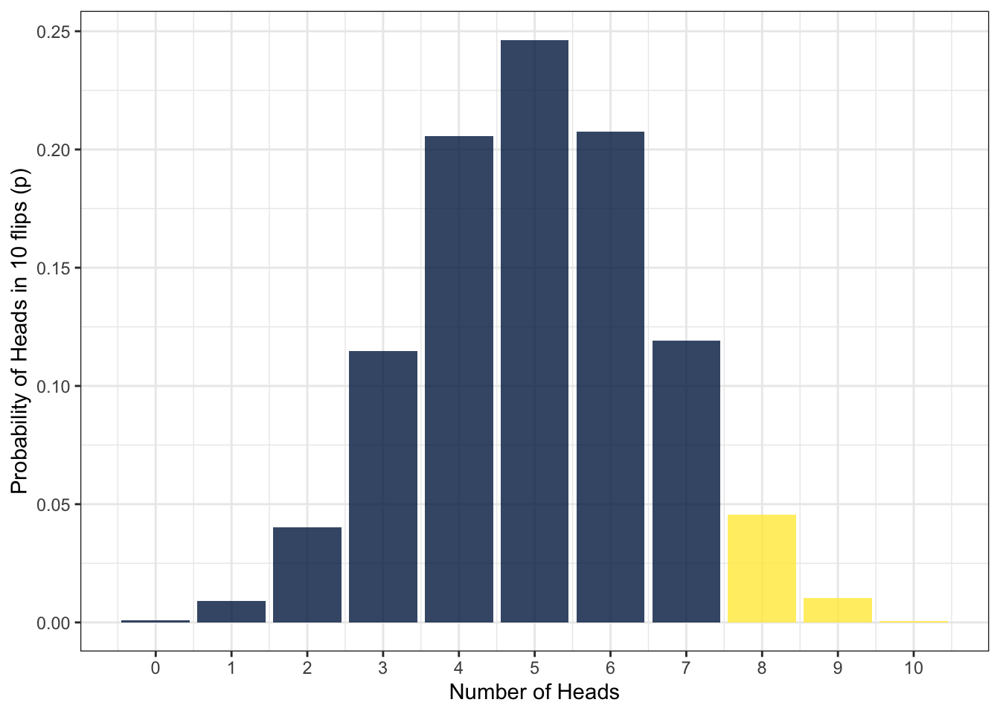
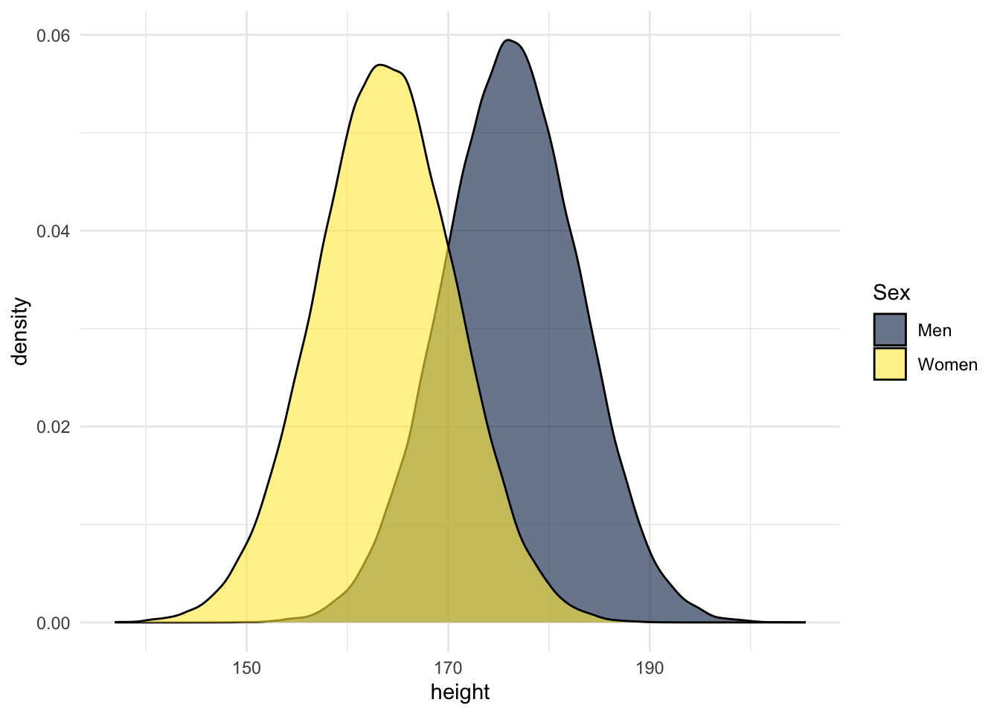

8 Probability
In this chapter we are going to bring in more ideas around probability. This is more of a reading chapter - in that we ask you to read more than try - but there are a few activities to try along the way and to think about to make sure you are getting the idea. Probability is really important in helping us make inference from our sample to our population and, before we go on to look at different inferential tests, and now that we have a good handle on data wrangling and visualisation, now would seem an ideal time to recap and introduce some key aspects about probability.
Don’t worry if this chapter does not make complete sense. It may take a few reads or it may take reading once to get the gist and then coming back to the ideas when we try out a few datasets ourselves. The main key concept that you want to take away from this chapter, if you get nothing else from this chapter, is that you can establish the probability of obtaining a value on any distribution, and from that probability you can make an inference about how likely or unlikely you were to obtain that value. Try to keep that in mind as we go through the next few sections and you should be ok.
The first half of this chapter doesn’t contain any coding, instead, we’re going to recap some core statistical concepts. If you need any additional resources beyond what has been discussed in the lectures, you may find the below useful. These are not essential and you can skip them but again they may just add that little bit you need to help you understand the ideas behind probability.
- Read Statistical thinking (Noba Project)
- Watch Normal Distribution - Explained Simply (10 mins)
- Watch Probability explained (8 mins)
- Watch Binomial distribution (12 minutes)
8.1 Introduction to probability?
Probability (p) is the extent to which an event is likely to occur and is represented by a number between 0 and 1. For example, the probability of flipping a coin and it landing on ‘heads’ would be estimated at p = .5, i.e., there is a 50% chance of getting a head when you flip a coin.
In fact, calculating the probability of any individual event occurring can be formulated as:
\[p = \frac{number \ of \ ways \ the \ event \ could \ arise}{number \ of \ possible \ outcomes}\] For example, what is the probability of randomly drawing your name out of a hat of 12 names where one name is definitely yours? Well, if there are 12 possible outcomes, and only 1 way for your name to arise, then it the above formula becomes:
\[p = \frac{1}{12} = 0.0833333\]
Meaning that the probability is 0.0833333. Or, if you wanted to write that as a percentage then it would be 8.3333333%, meaning that out of every 100 draws from the hat you would expect your name to come out about 8.3 times. And if there had been four names in the hat and one was yours then it would be:
\[p = \frac{1}{4} = 0.25\]
And if it had been 24 names in the hat and one was yours then it would have been:
\[p = \frac{1}{24} = 0.0416667\]
So you can see that the probability of an event occurring changes with the number of possible outcomes. Makes sense really! The more possible outcomes, the less likely any specific one outcome is going to happen. So far so good!
8.1.0.1 Activity 1: Probability
Try to answer these questions below to check your understanding.
- What would be the probability of selecting your name from a hat when there are ten names in the hat and your name is one of them?
- What would be the probability of selecting your name from a hat when there are 100 names in the hat and your name is not one of them? Be careful on this one!
8.2 Types of data
How you tackle probability also depends on the type of data/variables you are working with (i.e. discrete or continuous). This is also referred to as Level of Measurements and here we will recap on those different types of data.
Discrete data can only take integer values (whole numbers). For example, the number of participants in an experiment would be discrete - we can’t have half a participant! Discrete variables can also be further broken down into nominal and ordinal variables.
- Ordinal data is a set of ordered categories; you know which is the top/best and which is the worst/lowest, but not the difference between categories. For example, you could ask participants to rate the attractiveness of different faces based on a 5-item Likert scale (very unattractive, unattractive, neutral, attractive, very attractive). You know that very attractive is better than attractive but we can’t say for certain that the difference between neutral and attractive is the same size as the distance between very unattractive and unattractive.
-
Nominal data is also based on a set of categories but the ordering doesn’t matter (e.g. left or right handed). Nominal is sometimes simply referred to as
categoricaldata.
Continuous data on the other hand can take any value. For example, we can measure age on a continuous scale (e.g. we can have an age of 26.55 years), other examples include reaction time or the distance you travel to university every day. Continuous data can be broken down into Interval or Ratio data.
- Interval data is data which comes in the form of a numerical value where the difference between points is standardised and meaningful. For example temperature, the difference in temperature between 10-20 degrees is the same as the difference in temperature between 20-30 degrees.
- Ratio data is very like interval but has a true zero point. With our interval temperature example above, we have been experiencing negative temperatures (-1,-2 degrees) in Glasgow but with ratio data you don’t see negative values such as these i.e. you can’t be -10 cm tall.
8.2.0.1 Activity 2: Types of data
Try to answer these questions below to check your understanding. What types of data are the below measurements?
- Time taken to run a marathon (in seconds):
- Finishing position in marathon (e.g. 1st, 2nd, 3rd):
- Which Sesame Street character a runner was dressed as:
- Temperature of a runner dressed in a cookie monster outfit (in degrees Celsius):
8.3 Probability distributions
OK great. So we know a bit more about probability and a bit more about data types. Next thing we need to think about are probability distributions! A probability distribution is the theoretical counterpart to the observed frequency distribution. A frequency distribution simply shows how many times a certain event actually occurred. A probability distribution says how many times it should have occurred. Say for example you run a test on how many times different flips of a coin produce either heads or tails. What you count yourself is the frequency distribution. What was expected, based on simulationsGenerating data, as opposed to collecting data, from summary parameters such as the mean and standard deviation by mathematicians, is the probability distribution. Mathematicians have actually simulated a number of different probability distributions, and we know that different types of data will tend to naturally fall into a known distribution. From this, we can use these distributions to help us calculate the probability of an event without having to run it ourselves. To say that in another way, we can determine the probability of an event by running a test many many times ourselves, or we can use one of these simulated probability distributions which would save us a lot of time and effort. And that is what we are going to show you here.
The three distributions we will look at, to help us understand probability, are:
8.4 The uniform distribution
The uniform distribution is when each possible outcome has an equal chance of occurring. Let’s take the example from above, pulling your name out of a hat of 12 names. Each individual name has an equal chance of being drawn (p = .08). If we visualised this distribution, it would look like this distribution below - each outcome, in this case each name, has the same chance of occurring:
The uniform distribution does not feature that regularly in Psychology, except perhaps in experiments where you are randomising which block people get first or when performing a chi-square test, but it helps us start to understand that each outcome has a probability in a distribution.
8.5 The binomial distribution
The next distribution we want to look at is the binomial distribution. The binomial (bi = two, nominal = categories) distribution, is used for discrete data, and is a probability distribution which calculates probabilities of success for situations where there are two possible outcomes e.g., flipping a coin; your outcomes are either heads or tails! A binomial distribution models the probability of any number of successes being observed (e.g. was it a heads when you wanted heads), given the probability of a success and the number of observations (e.g. how many times did you get heads (a success) over ten coin flips (the observations)). It is probably worth pointing out that you as the researcher determine what is the success (heads or tails) but for ease here we will try to stick to heads.
Let’s say we flip a coin 10 times. Assuming the coin is fair (probability of heads = .5), how many heads should we expect to get? The below figure shows the results of a simulation for 10,000 coin flips (if you’d like to do this simulation yourself, you can see the code by clicking “Show the code”). However, what this distribution means is that we can use what we know about our data and the binomial distribution to work out the probability of different outcomes. For example, instead of running a whole bunch of tests, we could use the distribution to answer the question of what is the probability of getting at least 3 heads if you flip a coin 10 times?.

Note that you are not expected to understand this code right now
heads10000 <- replicate(n = 10000,
expr = sample(0:1,
10,
TRUE) %>%
sum())
data10000 <- tibble(heads = heads10000) %>%
group_by(heads) %>%
summarise(n = n(),
p=n/10000)
ggplot(data10000, aes(x = heads,y = p)) +
geom_bar(stat = "identity") +
labs(x = "Number of Heads",
y = "Probability of Heads in 10 flips (p)") +
theme_bw() +
scale_x_continuous(breaks = c(0,1,2,3,4,5,6,7,8,9,10))Again, the binomial distribution is not hugely common in Psychology but we are really starting to see how we can ask questions about outcomes based on probability distributions as opposed to running tests ourselves. Let’s then look at this in a distribution that is very common in psychology - the normal distribution
8.6 The normal distribution
The normal distribution, reflects the probability of any value occurring for a continuous variable. Examples of continuous variables include height or age, where a single person can score anywhere along a continuum. For example, a person could be 21.5 years old and 176 cm tall.
The normal distribution looks like this:

Something to note is that the normal distribution is symmetrical, meaning there is an equal probability of observations above and below the mean occurring. This means that, if the mean in the above plot of heights is 170 cm, we could expect the number of people who have a height of 160 cm to be the same as the number of people who have a height of 180 cm. A second thing to note is that as the distribution is symmetrical, the mean, median, and mode of the distribution are all equal and in the middle of the distribution and have the highest probability of occurring. As you move away from the middle of the distribution, the probability of those outcomes occurring starts to reduce. This plays an important role in analyses as we will come on to see in later chapters.
Now, however, in the same way that we could with the coin flips, we can then use what we know about our data and the normal distribution to estimate the probability of certain outcomes, such as what’s the probability that someone would be taller than 190cm?
As with any probabilities, real-world data will come close to the normal distribution, but will (almost certainly) never match it exactly. As we collect more observations from data that we might expect to be normally distributed, our data will get increasingly closer to a normal distribution. As an example, here’s a simulation of an experiment in which we collect heights from 5000 participants. As you can see, as we add more observations, our data starts to look more and more like the normal distribution in the previous figure.

8.6.0.1 Activity 3: Normal distribution
Complete the sentences to make sure that you are understanding the above.
- In a normal distribution, the mean, median, and mode .
- In a normal distribution, the further away from the mean an observation is .
- Whereas the binomial distribution is based on situations in which there are two possible outcomes, the normal distribution is based on situations in which the data .
8.6.0.2 Activity 4: Distribution test
Which distribution is likely to be associated with the following?
- Scores on an IQ test
- Whether a country has won or lost the Eurovision song contest
- Picking a spade card out of a normal pack of playing cards
8.7 Using the binomial distribution
Now, we’re going to calculate probabilities based on the binomial distribution. In this chapter, for the first time we don’t need to load the tidyverse. All of the functions we need are contained in Base R. If you want a refresher on the difference between Base R and packages, see Programming Basics.
8.7.0.1 Activity 5: Getting Set-Up
- Open a new R Markdown document, call it “Probability” and save it in the relevant chapter folder, remembering to delete the default text which we do not need.
We’re going to use three Base R functions to work with the binomial distribution:
-
dbinom()- the density function: gives you the probability of x successes given the number of trials and the probability of success on a single trial (e.g., what’s the probability of flipping 8/10 heads with a fair coin?). -
pbinom()- the probability distribution function: gives you the cumulative probability of getting a number of successes below a certain cut-off point (e.g. probability of getting 0 to 5 heads out of 10 flips), given the size and the probability. This is known as the cumulative probability distribution function or the cumulative density function. -
qbinom()- the quantile function: is the opposite ofpbinom()in that it gives you the x axis value for a given probability p, plus given the size and prob, that is if the probability of flipping a head is .5, how many heads would you expect to get with 10 flips?
So let’s try these functions out to answer two questions:
- What is the probability of getting exactly 5 heads on 10 flips?
- What is the probability of getting at most 2 heads on 10 flips?
8.7.0.2 Activity 6: dbinom()
Let’s start with question 1, what is the probability of getting exactly 5 heads on 10 flips?
We want to predict the probability of getting 5 heads in 10 trials (coin flips) where the probability of success on each flip is 0.5 (it’ll either be heads or tails so you have a 50/50 chance which we write as 0.5). We will use dbinom() to work this out:
The dbinom() (density) function has three arguments:
-
x: the number of ‘heads’ we want to know the probability of. Either a single value, 3, or a series of values, 0:10. In this case we want to know about 5 heads, so we write 5. -
size: the number of trials (flips) we are simulating; in this case, 10 flips. -
prob: the probability of ‘heads’ on one trial. Here chance is 50-50 which as a probability we state as 0.5 or .5
Type and run the below code in a new code chunk:
Looking at the outcome, answer the following questions:
- To two decimal places, what is the probability of getting 5 heads out of 10 coin flips?
- What is this probability expressed in percent?
8.7.0.3 Activity 7: pbinom()
OK, question 2. What is the probability of getting at most 2 heads on 10 flips?
This time we use pbinom() as we want to know the cumulative probability of getting a maximum of 2 heads from 10 coin flips. So we have set a cut-off point of 2 but we still have a probability of getting a heads of 0.5.
-
Note:
pbinom()takes the argumentssizeandprobargument just likedbinom(). However, the first input argument isqrather thanx. This is because in dbinomxis a fixed number, whereasqis all the possibilities up to and including a given number (e.g. 0, 1, 2).
Type and run the below code in a new code chunk:
Looking at the outcome, answer the following question:
- What is the probability of getting a maximum of 2 heads on 10 coin flips to 2 decimal places?
- What is this probability expressed in percent?
8.7.0.4 Activity 8: pbinom() 2
Let’s try one more scenario with a cut-off point to make sure you have understood this. What is the probability of getting 7 or more heads on 10 flips?
We can use the same function as in the previous example, however, there’s an extra argument if we want to get the correct answer. Let’s try running the code we used above first but change q = 2 to q = 7 to see what we get.
This tells us that the probability is .95 or 95% - that doesn’t seem right does it? It seems very high for getting 7 or more heads out of 10 coin flips! Why is that? Well, the default behaviour for pbinom() is to calculate the cumulative probability for the lower tail of the curve, i.e., if you specify q = 2 it calculates the probability of all outcomes up to and including 2. We specified q = 7 which means that we have calculated the probability of getting an outcome of 0, 1, 2, 3, 4, 5, 6, or 7 - shown here in the blue area in the below figure - which is obviously very high.

To get the right answer, we have to add lower.tail = FALSE to our code as we are interested in the upper tail of the distribution. Because we want the cumulative probability to include 7, and because we know q words as up to and including, in order to get 7 or more, we set q = 6. This will now calculate the cumulative probability of getting 7, 8, 9, or 10 heads out of 10 coin flips. Remember, if we set q = 7 that would be up to including 7, and looking at the upper tail of the distribution would only give us 8, 9 and 10. We want 7, 8, 9 and 10, so we have to set up to and including 6, which leaves us 7 and more.
Try and run the below code in a new code chunk:
Looking at the outcome, answer the following question:
- What is the probability of getting between 7 and 10 heads from 10 coin flips to 2 decimal places?
- What is this probability expressed in percent?
8.7.0.5 Activity 9: qbinom()
OK great! You are doing excellent as this is tricky stuff. Remember though the whole point is to show you that using probability distributions you can ask all sorts of questions about the probability of any outcome or series of outcomes.
Now let’s consider a scenario in which you’d use the quantile function qbinom. Imagine that you’ve been accosted by a street magician and they want to bet you that they can predict whether the coin will land on heads or tails. You suspect that they’ve done something to the coin so that it’s not fair and that the probability of the coin landing on a head is no longer .5 or 50/50 - you suspect the coin is now very much more likely to land on tails. Your null hypothesis is that the coin is not a trick coin and that the probability of heads or tails should be even. You are going to run a single experiment to test your hypothesis, with 10 trials. What is the minimum number of heads that is acceptable if p really does equal .5?
You have used the argument prob in the previous two functions, dbinom and pbinom, and it represents the probability of success on a single trial (here it is the probability of ‘heads’ in one coin flip, .5). For qbinom, prob still represents the probability of success in one trial, whereas p represents the overall probability of success across all trials. When you run pbinom, it calculates the number of heads that would give that probability.
We know from looking at the binomial distribution above that sometimes even when the coin is fair, we won’t get exactly 5/10 heads. Instead, we want to set a cut-off, a probability that below which we’ll say that it’s so unlikely we’d get that result if the coin was fair and in this example we will use the default cut-off for statistical significance in psychology, .05, or 5%.
In other words, you ask for the minimum number of successes (e.g. heads) to maintain an overall probability of .05, in 10 flips, when the probability of a success on any one flip is .5. To do that we use the below code:
From the code we see that the answer is 2. That means that if the magician flipped fewer than two heads out of ten, you could conclude that there is a less than 5% probability that would happened if the coin was fair. You would reject the null hypothesis that the coin was unbiased against heads and very very politely ask the kind magician for your money back!
However, ten trials is probably far too few if you want to accuse the magician of being a bit dodge. Run the below code and then answer the following questions:
- What would your cut-off be if you ran 100 trials?
- What would your cut-off be if you ran 1000 trials?
- What would your cut-off be if you ran 10,000 trials?
Notice that the more trials you run, the more precise the estimates become, that is, the closer they are to the probability of success on a single flip (.5). Again this is a simplification, but think about how this relates to sample size in research studies, the more participants you have, the more precise your estimate will be.
We should also mention that qbinom also uses the lower.tail argument and it works in a similar fashion to pbinom. We won’t try that out here but it is good to know in case you ever need it.
Visualise it!
Have a go at playing around with different numbers of coin flips and probabilities in our dbinom() and pbinom() app!
8.8 Using the normal distribution
A similar set of functions exist to help us work with other distributions, including the normal distribution and we’re going to use three of these:
-
dnorm()- the density function, for calculating the probability of a specific value -
pnorm()- the probability or distribution function, for calculating the probability of getting at least or at most a specific value -
qnorm()- the quantile function, for calculating the specific value associated with a given probability
As you can probably see, these functions are very similar to the functions that are used to work with the binomial distribution. We will use data about height in Scottish people to show you how the above functions work in the normal distribution
8.8.1 Probability of heights
Data from the Scottish Health Survey (2008) shows that:
- The average height of a 16-24 year old Scottish man is 176.2 centimetres, with a standard deviation of 6.748.
- The average height of a 16-24 year old Scottish woman is 163.8 cm, with a standard deviation of 6.931.
- At the time of writing, there is currently no data on Scottish trans and non-binary people.
The below figure is a simulation of this information - again, you can see the code used to run this simulation by clicking the “Show me the code” button but note that you are not asked to understand this right now.
men <- rnorm(n = 100000, mean = 176.2, sd = 6.748)
women <- rnorm(n = 100000, mean = 163.8, sd = 6.931)
heights <- tibble(men, women) %>%
pivot_longer(names_to = "sex", values_to = "height", men:women)
ggplot(heights, aes(x = height, fill = sex)) +
geom_density(alpha = .6) +
scale_fill_viridis_d(option = "E") +
theme_minimal()
So to test the normal distribution, and to round off this chapter, we will use the above information to calculate the probability of observing at least or at most a specific height with pnorm(), and the heights that are associated with specific probabilities with qnorm().
8.8.1.1 Activity 10:pnorm()
pnorm() requires three arguments:
-
qis the value that you want to calculate the probability of. Note however you set this as exactly the number you want and not 1 less than the number you want. This is because the data is continuous and not discrete as in the binomial distribution. -
meanis the mean of the data -
sdis the standard deviation of the data -
lower.tailworks as above and depends on whether you are interested in the upper or lower tail,
Type the code below into a code chunk and replace the NULLs to calculate the probability of meeting a 16-24 y.o. Scottish woman who is as tall or taller than the average 16-24 y.o. Scottish man.
- hint: You are asking about the female distribution so use that mean and sd
- hint: the average male is 176.2
- hint: tall or taller is upper.
- hint: the solution is at the end of the chapter if you are stuck.
Looking at your outcome, answer the following questions.
- What is the probability of meeting a 16-24 y.o. Scottish woman who is taller than the average 16-24 y.o. Scottish man?
- What is this probability expressed in percent?
8.8.1.2 Activity 11: pnorm 2
Fiona is a very tall Scottish woman (181.12 cm) in the 16-24 y.o. range who will only date men who are taller than her.
- Using
pnorm()again, what is the proportion of Scottish men Fiona would be willing to date to 2 decimal places?- hint: you want to know about the male population
- hint: Fiona is 181.12 cm tall and you want taller than her.
- What is this probability expressed in percent?
8.8.1.3 Activity 12: pnorm 3
On the other hand, Fiona is bisexual and will only date women who are shorter than her.
- What is the proportion of Scottish women would Fiona be willing to date to 2 decimal places?
- hint: female distribution, lower than Fiona.
- What is this probability expressed in percent?
8.8.1.4 Activity 13: qnorm()
Finally, in the previous examples we calculated the probability of a particular outcome. Now we want to calculate what outcome would be associated with a particular probability and we can use qnorm() to do this.
qnorm() is very similar to pnorm() with one exception, rather than specifying q our known observation or quantile, instead we have to specify p, our known probability.
Replace the NULLs in the above code to calculate how tall a 16-24 y.o. Scottish man would have to be in order to be in the top 5% (i.e., p = .05) of the height distribution for Scottish men in his age group. Remember the solutions are at the end of the chapter. You can confirm if you are right or not by answering this question:
The answer to this last question was:Visualise it!
Have a go at playing around with different distributions in our dnorm() and pnorm() app - access it here
8.9 Finished
And that’s it! The key concepts to take away from this chapter are that different types of data tend to follow known distributions, and that we can use these distributions to calculate the probability of particular outcomes. This is the foundation of many of the statistical tests that you will learn about in this course. For example, if you want to compare whether the scores from two groups are different, that is, whether they come from different distributions, you can calculate the probability that the scores from group 2 would be in the same distribution as group 1. If this probability is less than 5% (p = .05), you might conclude that the scores were significantly different. That’s an oversimplification obviously, but if you can develop a good understanding of probability distributions it will stand you in good stead for the rest of the statistics content.
This was a long read so there is no test yourself today but be sure to make notes and to check your understanding of different concepts. Please also remember to ask any questions you are unsure of.
8.10 Activity solutions
8.10.0.1 Activity 6
- To two decimal places, what is the probability of getting 5 heads out of 10 coin flips?
8.10.0.2 Activity 7
- What is the probability of getting a maximum of 2 heads on 10 coin flips to 2 decimal places?
8.10.0.3 Activity 8
- What is the probability of getting between 7 and 10 heads from 10 coin flips to 2 decimal places?
8.10.0.4 Activity 10
- What is the probability of meeting a 16-24 y.o. Scottish woman who is taller than the average 16-24 y.o. Scottish man?
8.10.0.5 Activity 11
- Using
pnorm()again, what is the proportion of Scottish men Fiona would be willing to date to 2 decimal places?
8.10.0.6 Activity 12
- What is the proportion of Scottish women would Fiona be willing to date to 2 decimal places?
8.10.0.7 Activity 13
The answer to this last question was:
8.11 Words from this Chapter
Below you will find a list of words that were used in this chapter that might be new to you in case it helps to have somewhere to refer back to what they mean. The links in this table take you to the entry for the words in the PsyTeachR Glossary. Note that the Glossary is written by numerous members of the team and as such may use slightly different terminology from that shown in the chapter.
| term | definition |
|---|---|
| binomial distribution | |
| chi-square | |
| continuous | |
| discrete | |
| distribution | |
| inferential | |
| integer | |
| Interval | |
| Likert | |
| nominal | |
| normal distribution | |
| ordinal | |
| population | |
| probability | |
| Ratio | |
| sample | |
| simulation | Generating data, as opposed to collecting data, from summary parameters such as the mean and standard deviation |
| uniform distribution |
That is end of this chapter. Be sure to look again at anything you were unsure about and make some notes to help develop your own knowledge and skills. It would be good to write yourself some questions about what you are unsure of and see if you can answer them later or speak to someone about them. Good work today!